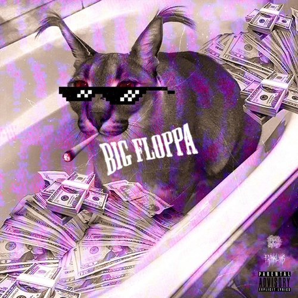
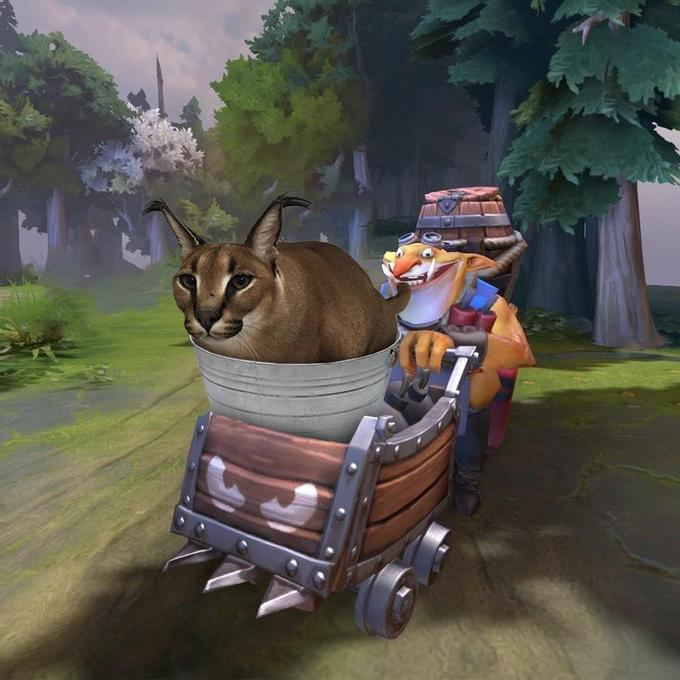

Floppa memes

Big Floppa full of money

Floppa with a KFC bucket in his head

Techies is carrying Floppa in his cart

Floppa evolves into WhatsApp2
Big Floppa or simply Floppa refers to a series of ironic memes based on photographs of a caracal named Gregory, and sometimes photographs of other medium-sized cats. Originally circulated among ironic Instagram meme accounts starting in late December 2019, the meme gained more widespread popularity online starting in May 2020.
Big Floppa full of money
Floppa with a KFC bucket in his head
Techies is carrying Floppa in his cart
Floppa evolves into WhatsApp2
"I love it when you call me Big Floppa"
Sign up in our site by clicking that button right over there!